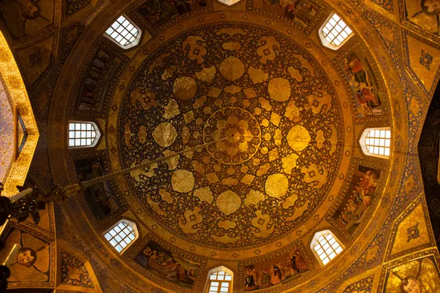
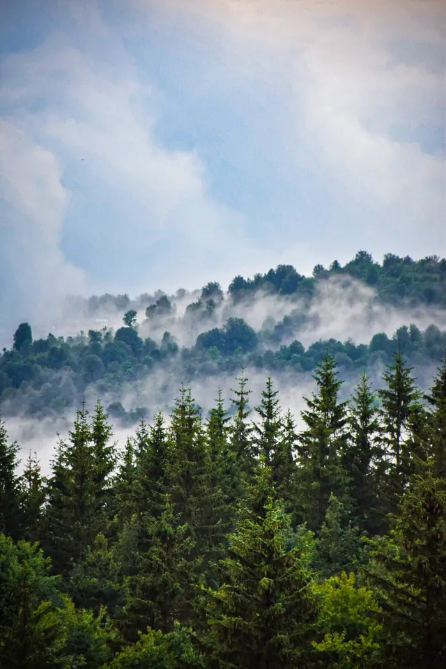

Photos
Categories
Tags
Locations
About
Instagram
Telegram
500px
◐
All photos
10 photos
Store Lungegårdsvannet Bay
Bryggen, Bergen
Zayande Rod
Sheikh Lotfollah Mosque In Night

Holy Bethlehem Church
Penny The Turtle
Shapori House
Nasir Al Molk Mosque

Mazichal Trees
Sheikh Lotfollah Mosque In Rainy Day